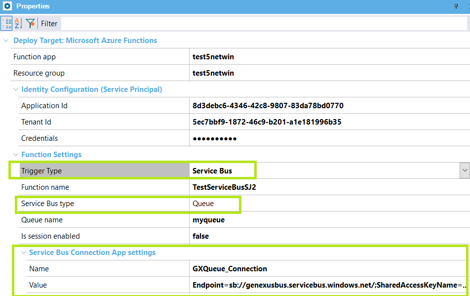

Service Bus and Queue Storage triggered Azure functions
Service Bus trigger functions and Queue Storage trigger functions are other types of Azure Functions.
Queue Storage
The Queue storage trigger runs functions as messages are added to Azure Queue storage.
The Trigger Type property at the deployment unit should be "Queue" for this kind of function.
Service Bus
You use the Service Bus trigger to respond to messages from a Service Bus queue or topic.
The Trigger Type property at the deployment unit should be "Service Bus" for this kind of function.
Deployment steps
First, read How to: create a GeneXus procedure to be deployed as an Azure Function.
To deploy the function, use the deployment tool. See Deploy to Azure Functions.
Function Configuration
The function's configuration depends on its Trigger type.
Examples
In the case of Service Bus, it can be "Queue" or "Topic," and it has different configuration settings for each one.
Example for Service Bus Topic:
Trigger Type Service Bus Topic example
The configurations are created automatically as app settings in the cloud so they can be managed easily (with no need to re-deploy)
Example for Service Bus Queue:

Trigger Type Service Bus Queue example
Example for Queue Trigger Type:
In the case of Queue Trigger type, the configuration settings are as shown in the following image taken from an example:

Trigger Type Queue example
As stated before, all the configurations are created automatically as app settings in the cloud so they can be managed easily (with no need to re-deploy).
| Backlinks | |
| Toc:Application Deployment tool | Azure Functions |